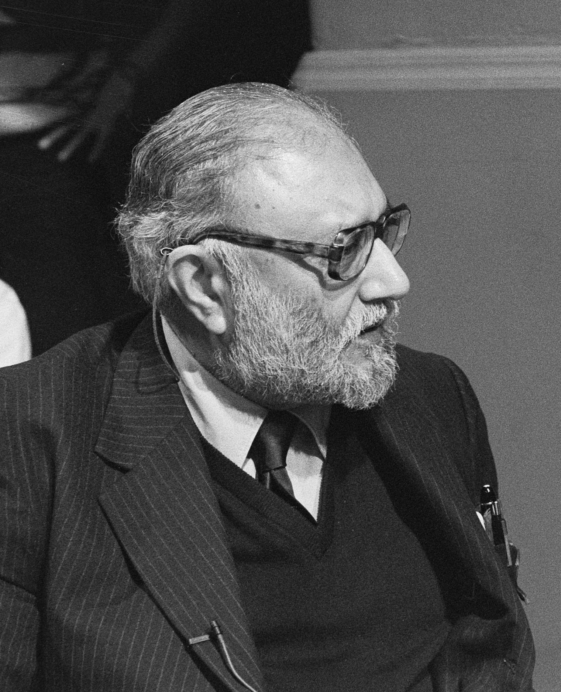

Nobel Prize
in Physics
Recognised alongside Glashow and Weinberg for contributions to the unified theory of weak and electromagnetic interactions.
Scientist • Educator • Visionary
A Legacy Written in the Stars
He helped reveal a connection between nature’s fundamental forces—and worked to give more people a place in the pursuit of science.
Explore his story1926 — 1996 A life devoted to discovery

01 / The person behind the physics
From Jhang to the international
scientific community.
Abdus Salam’s life brought together two questions: how does nature work, and who gets the opportunity to study it?
Born in Jhang in 1926, in what is now Pakistan, Salam grew up in a family that valued learning. A scholarship took him to Government College in Lahore, where he completed his master’s degree in 1946.
He continued at St John’s College, Cambridge, studying mathematics and physics before earning a doctorate in theoretical physics in 1952. His early research explored quantum electrodynamics, the theory describing how light and electrically charged particles interact.
Salam became a professor at Imperial College London in 1957. His work on electroweak theory helped connect the weak interaction with electromagnetism within a common framework. He shared the 1979 Nobel Prize in Physics with Sheldon Glashow and Steven Weinberg.
Alongside research, he pursued a practical goal: helping scientists stay connected across national and economic boundaries. In 1964 he founded the International Centre for Theoretical Physics in Trieste with Paolo Budinich. The centre made international exchange a central part of its work.
Read the biographical sources02 / Ideas that made a difference
Understanding nature.
Opening doors to discovery.
Recognised alongside Glashow and Weinberg for contributions to the unified theory of weak and electromagnetic interactions.
Helped develop electroweak theory: a mathematical description that brings two seemingly different interactions into one framework.
Founded ICTP with Paolo Budinich in Trieste, creating a meeting place for researchers from developing countries and colleagues worldwide.
Established the theoretical physics group at Imperial College London with Paul Matthews, helping build a shared environment for research.
03 / Milestones
A path through education,
ideas and institution-building.
Born on 29 January in Jhang, then in British India, now Pakistan.
Completes his master’s degree and receives a scholarship to St John’s College.
Earns his PhD in theoretical physics at Cambridge.
Becomes Professor of Theoretical Physics at Imperial College London.
A centre for international research and exchange takes shape.
Shares the Nobel Prize in Physics with Glashow and Weinberg.
Dies on 21 November. His research and the institutions he helped build remain part of scientific life.
The creation of Physics is the shared heritage of all mankind.
Abdus Salam Nobel Banquet, 10 December 1979
Read the speech transcript ↗04 / An unfinished conversation
Good ideas can begin anywhere.
Opportunity should, too.
ICTP’s mission addresses a barrier that talent alone cannot remove: access to an active research community. Its work connects scientists in developing countries with international expertise.
A shared place to discuss physics can link people separated by geography. Salam’s institution-building made that exchange part of the practice of science.
His legacy invites future scientists to think about both the questions they study and the opportunities they can create for others.
Continue exploring
Portrait: Abdus Salam 1987, Bart Molendijk / Anefo, Nationaal Archief. Licensed under CC BY-SA 3.0 Netherlands. Image file unchanged; scaled for display.